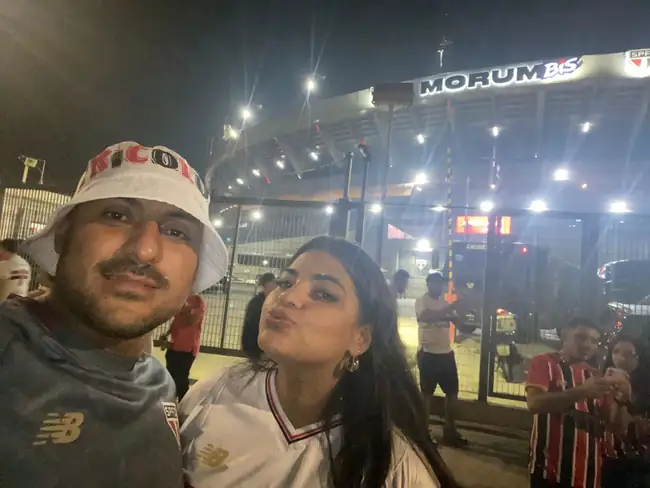
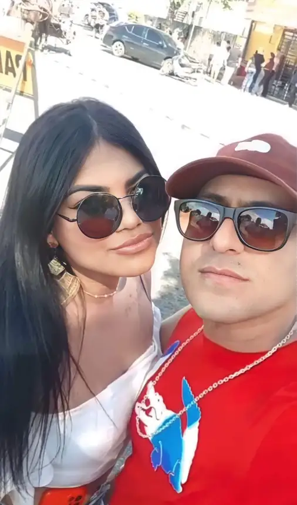
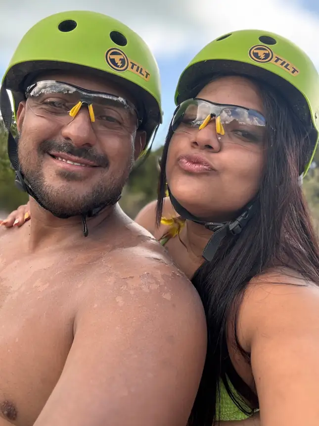
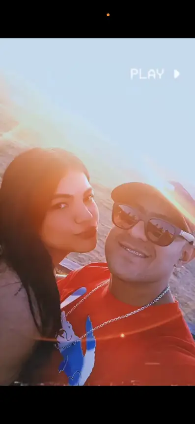
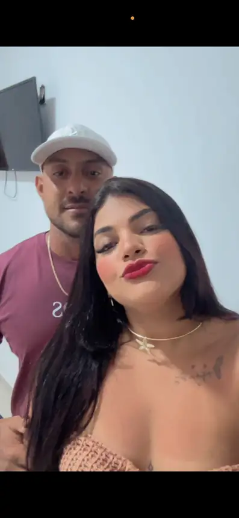
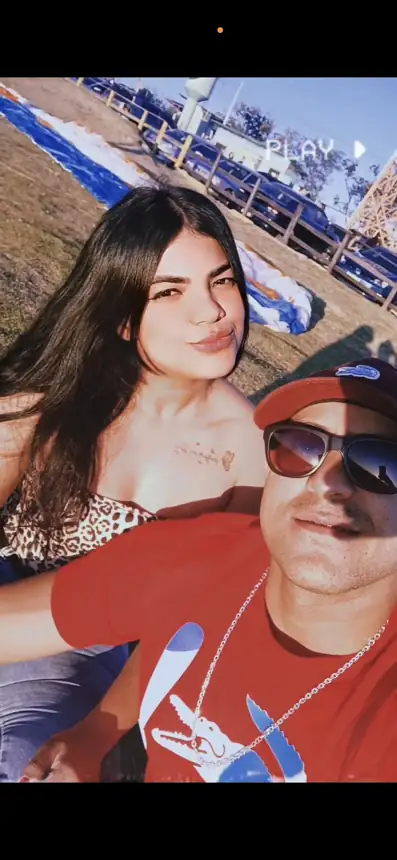
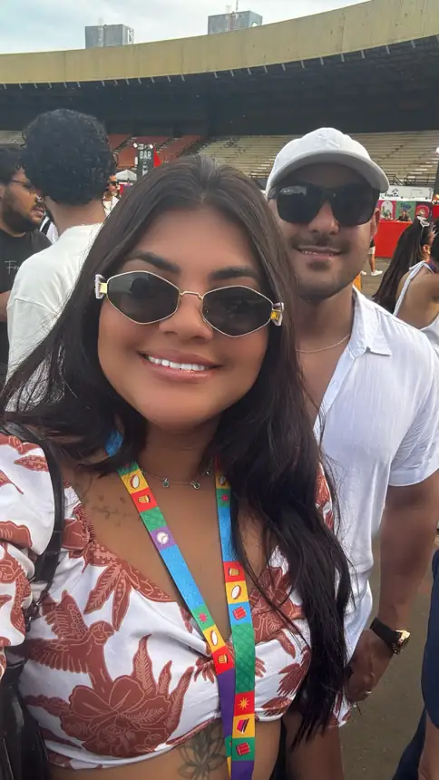

Seja bem-vindo!
Temos a honra e a alegria de convidar você para celebrar conosco o início de uma nova história. Uniremos nossas vidas em matrimônio e gostaríamos de compartilhar este momento tão especial ao lado de pessoas queridas e importantes em nossas vidas.
Sua presença tornará este dia ainda mais inesquecível.
Com amor e carinho



Cerimônia
20.03.2027
Noemia Padula Toniatti, nº 26
Ver localização no Maps


Confirmação de presença
Para confirmar, informe à noiva seu nome e os nomes dos convidados que comparecerão com você. Somente os nomes confirmados até 06/03/2027 poderão ser incluídos na organização das mesas.
Confirme aquiLista de presentes
Sua presença tornará nosso dia ainda mais especial. Se desejar nos presentear, deixamos nossa lista para ajudar na construção dos nossos sonhos.
Ver lista de presentes